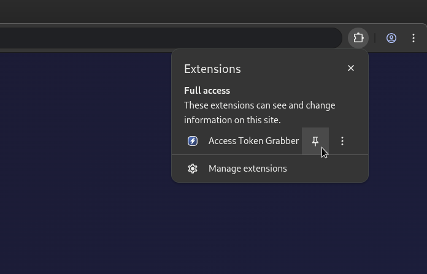
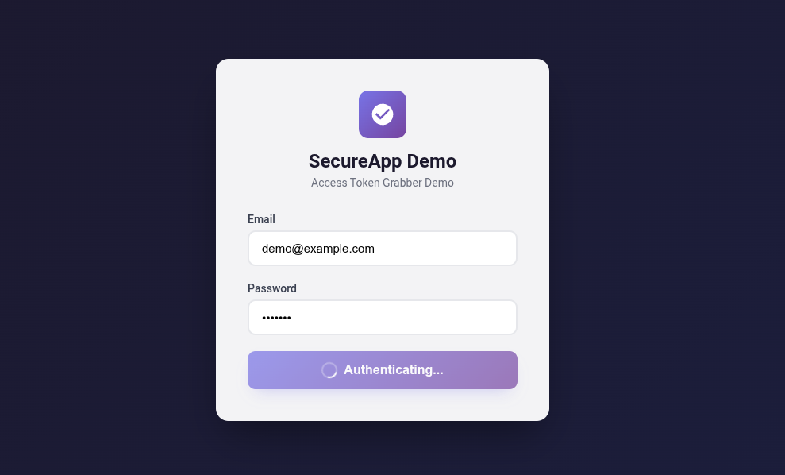
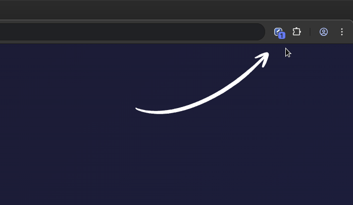
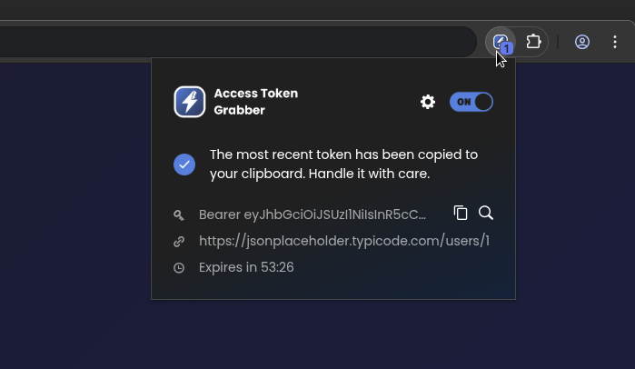
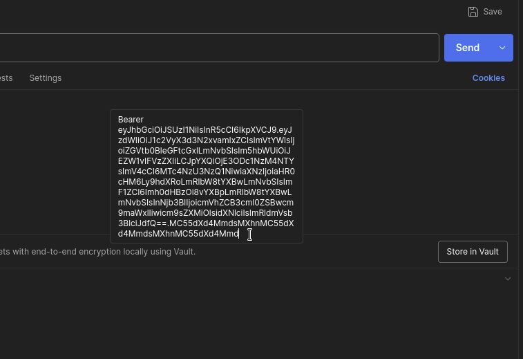

01
Setup
First pin the extension to your toolbar. Then click on the icon once to open and activate it.

02
Trigger a request
Open your app and fire any authenticated request - login, fetch users, whatever hits your API.

03
Auto-capture
Access Token Grabber spots the JWT the moment it appears. A small "1" badge confirms the catch.

04
Copy
Using one click on the icon or the shortcut Alt+C the token gets copied to your clipboard.

05
Paste
Paste the token into Postman, cURL, or your tool of choice.